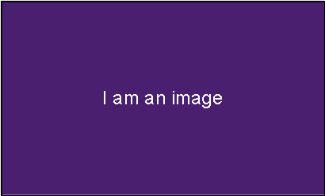

$Talk Title
$Subtitle
$author $date
Slide Text
Slide With List
Alpha
Beta
Gamma
Delta
Slide with code
public static void main(String... args) { }
Slide with image
caption

Big image
Much code
public static void main(String... args) { }
Questions?